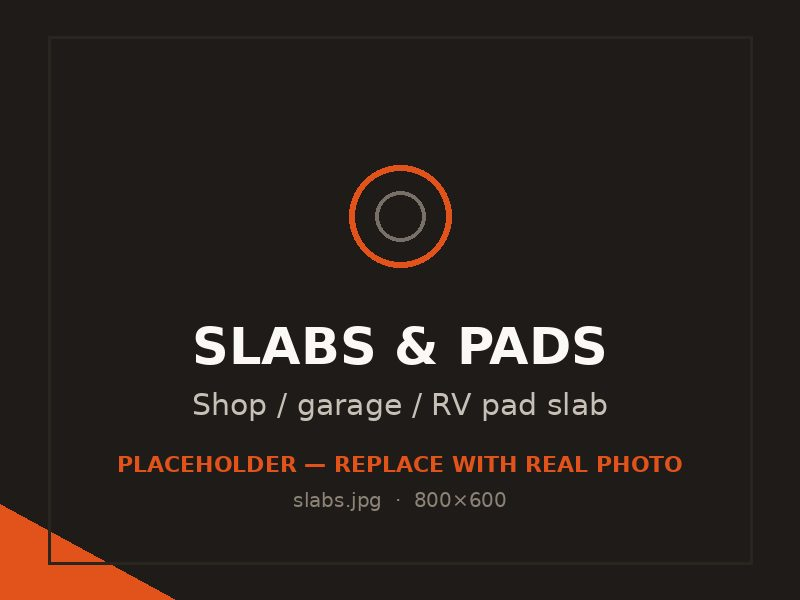

Slabs & pads
Flat, level, heavy-duty slabs for detached garages, shops, outbuildings and RV or boat parking — a fit for the bigger lots across the valley.

The Tooele Valley is full of properties with room to spread out — acreage in Erda, big lots in Grantsville, deep driveways in Stansbury Park. That space tends to fill up with shops, detached garages, outbuildings, and RVs, boats and trailers that need a solid place to sit. All of it starts with a properly poured slab.
We pour slabs and pads built for the loads they'll actually carry, on a base that keeps them flat and stable through the seasons.
A shop or garage floor has to stay flat and level for doors to seal, lifts to sit true and equipment to roll. We pour them with the right thickness, reinforcement and a properly compacted base, plus the slope and any drains you need. Done right, the floor is the foundation the whole building depends on.
Parking an RV, boat or loaded trailer on dirt or gravel turns into a rutted, muddy mess. A concrete pad gives you a clean, stable, all-weather surface that handles the weight without sinking or cracking. We size the thickness and reinforcement to the rig you're parking, because a forty-foot motorhome needs more slab than a small utility trailer.
This is where slabs and pads differ most from a basic patio. Heavy and concentrated loads call for thicker concrete — often five to six inches or more — with rebar placed to spread the weight and resist cracking. We match the build to the load so the slab performs for decades instead of spider-cracking in a few winters.
Shop floors usually get a smooth, hard-troweled finish that's easy to clean and tough on wear. Outdoor pads get a broom finish for grip. For enclosed slabs we can include a vapor barrier to keep ground moisture out, and we set the slope so water, melt and washdown drain where you want them.
Cost comes down to size, thickness, reinforcement and how much site prep the ground needs. A thick, reinforced RV pad costs more per square foot than a thin patio, but it's built to take a beating. We'll help you size the slab for current and future use and give you a clear written estimate once we've seen the spot.
Common questions
For a full-size RV we typically pour five to six inches with rebar, sometimes more depending on the weight and how it's parked. A small trailer needs less. We base the thickness on the actual rig and how often it moves on and off, so the pad holds up without cracking.
If the slab is enclosed and you want a dry, usable floor, yes — a vapor barrier under the concrete keeps ground moisture from wicking up through the slab, which protects stored items, coatings and equipment. We include it where it makes sense and explain when it isn't needed.
Yes, and it's common. We'll pour the slab to the dimensions, thickness and edge detailing your future building needs, sized from your plans or the building kit's specs, so it's ready when you're set to build. Getting the slab right up front saves headaches later.
It can, but only if it's built for it. A lift or heavy machinery needs adequate thickness and reinforcement at the load points. Tell us what's going on the slab before we pour, and we'll spec it to carry that load safely.
Always. The compacted base is what keeps a slab flat and stable, so we grade, bring in and compact the base material as part of the job. We don't pour heavy slabs on ground that hasn't been prepped properly.
Related work
Footings and stem walls for garages, shops and additions.
Drives sized for the same RVs and trucks your pad will hold.
Heavy-duty flatwork and pads for valley businesses.
Free, no pressure
Call or text for the fastest answer — most estimates are scheduled within a day.
(385) 469-5163